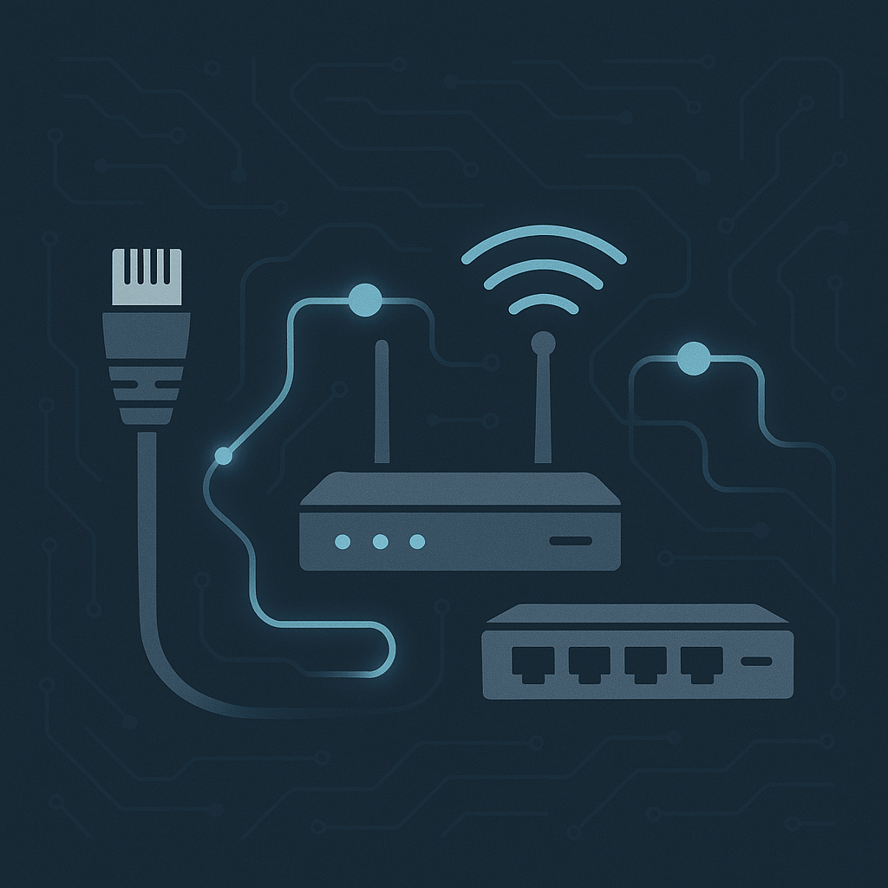
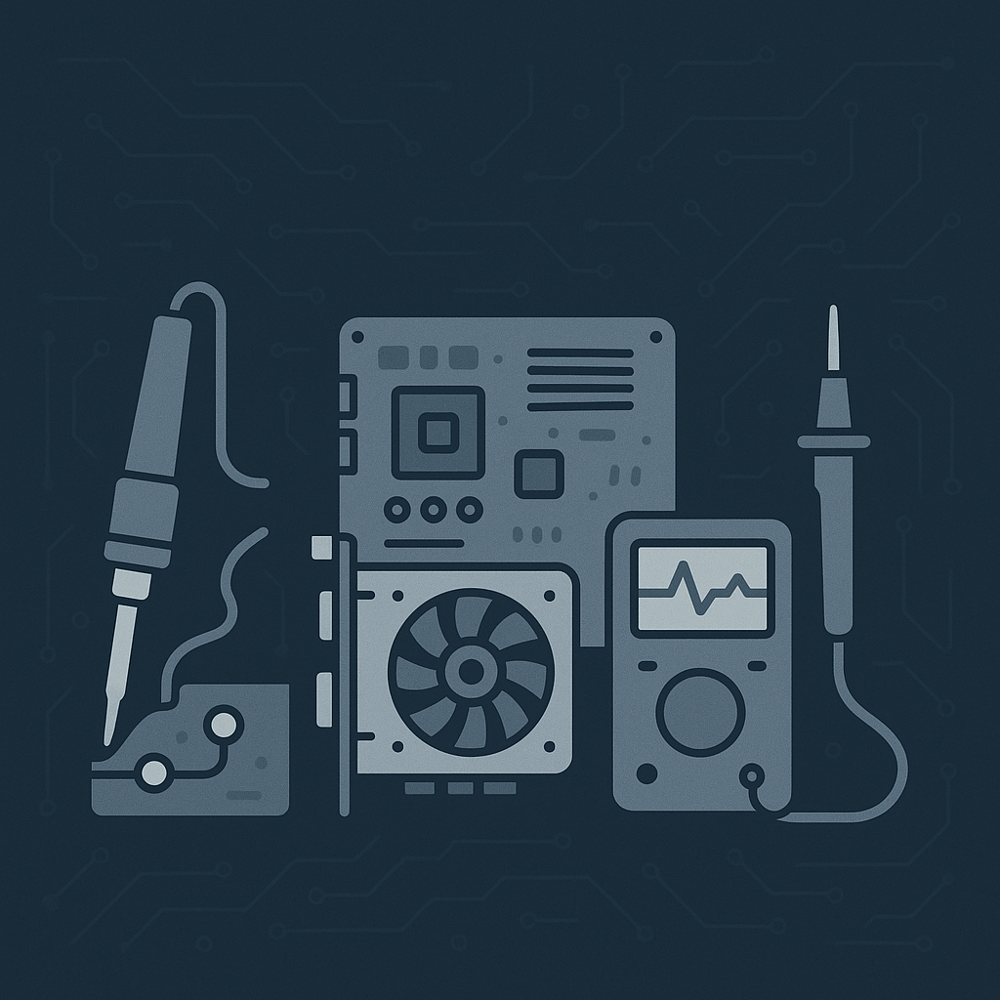
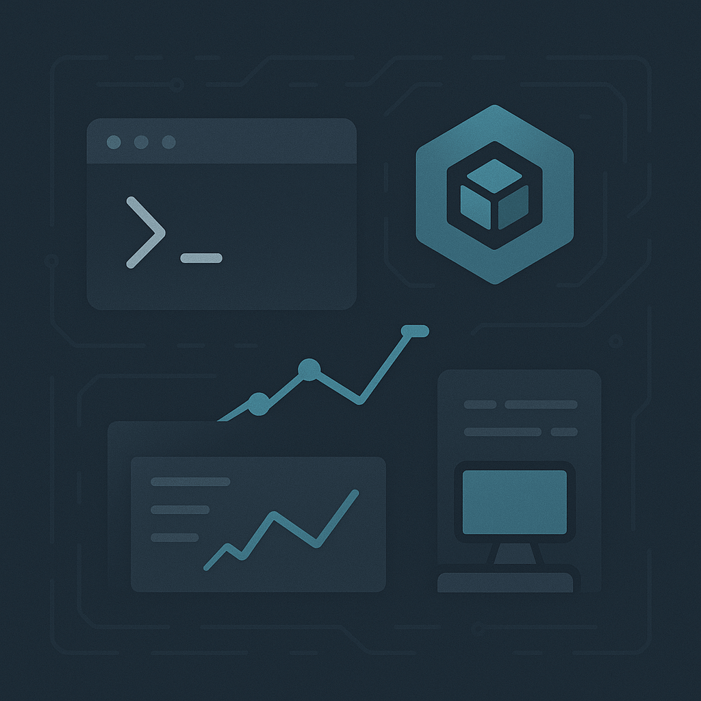

Technical Skills
Networking
- Network Configuration (LAN, VLAN, DHCP, DNS)
- Cisco / Ubiquiti device setup
- IP addressing, subnetting, and routing
- Network troubleshooting & packet analysis (Wireshark)

Hardware & Repair
- Soldering (basic electronics repair, circuit testing)
- PC assembly & upgrades
- Preventive maintenance & diagnostics

Software & Tools
- Linux administration
- Docker, Proxmox, and virtualization tools
- Python & Bash scripting
- Grafana, Prometheus, and network monitoring

Soft Skills
- Problem solving & critical thinking
- Attention to detail
- Team collaboration
- Continuous learning mindset